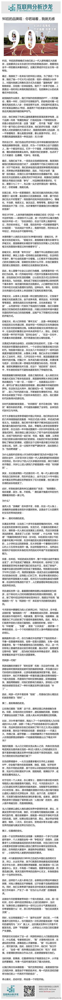

@脱不花妹妹 的文章//@电商报:①目前90后占所有网民13%,61.7%的90后每天接触互联网；②2012年起,每年将有700万90后大学生走出校园,成为最具潜力的新生消费力量；③对于90后来说网络是他们的信息获取主要途径,传统媒体已被替代；④90后大学生大都会冲动消费,且具有预付费习惯,愿意为新鲜买单。@互联网分析沙龙:【90后的品牌观：你若端着，我就无感】对于90后来说，刺激他们消费欲望的头号驱动力是“参与”，对品牌的需求是好玩、可玩，甭管三七二十一，先让我一头扑进怀里玩闹一番再说，你逼格再高，不好玩，不可玩，我都不会买账，因为你浑身透露着无力感！ 